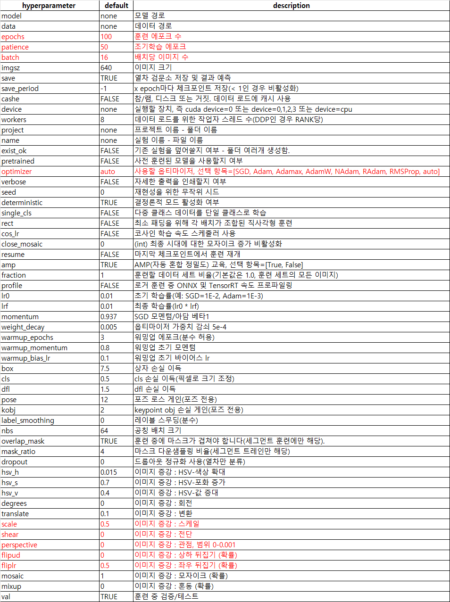
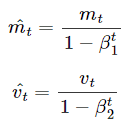
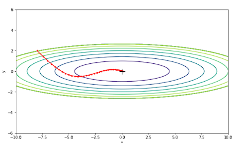

Model 개발 과정
실시간으로 정확도 높은 검출을 해야 하는 교통 법규 위반 프로젝트 멈춰에 가장 적합하다고 생각하여 YOLO 모델을 선택하게 되었습니다. YOLO 모델에서도 여러 가지 버전으로 나뉘기 때문에 몇 가지 버전을 실험적으로 학습 진행 후 최종 모델을 선정하였습니다.
데이터 소개 및 전처리
본 데이터는 AI-Hub에서 개인형 이동장치 안전 데이터의 Validation 데이터만 다운로드하여 사용했습니다.
1. 라벨링 데이터
 |
 |
| [표1] 어노테이션 표 | [표2] 라벨링 표 |

| 
|
| [사진1] 전처리 전 json 파일 | [사진2] 전처리 후 txt 파일 |
프로젝트 목표에 맞게 device 컬럼에서 CCTV 정보와 PM_code 컬럼에서 오토바이 위반 행위(pm code 13~19)에 맞는 video_id 컬럼을 추출해서 해당 jpg 이미지와 라벨링 데이터를 저장했습니다.
라벨링 데이터는 YOLO 학습 진행을 위해 PM 항목에 PM_code 컬럼과 points 컬럼을 통해 다음과 같이 진행했습니다.
- pm_code = pm_code - 13
- x_center = (left + width/2) / 1920
- y_center = (bottom + height/2) / 1080
- width = width / 1920
- height = weight / 1080
pm_code x_center y_center width height 형태로 정규화를 진행하여 총 26,671개 데이터로 줄이고, json 파일을 txt 파일로 수정했습니다.
2. 이미지 데이터
 |
 |
|
| [사진3] 해상도 전처리 전 jpg 이미지 (1920*1080) | [사진4] 해상도 전처리 후 jpg 이미지 (640*640) |
라벨링 전처리가 완료된 데이터의 video_id에 해당하는 이미지 파일만 추출하고, 학습 진행시 속도 향상을 위해 기본 이미지 데이터 해상도를 1920*1080에서 640*640으로 줄였습니다.
총 26,671개의 이미지 데이터와 라벨 데이터를 모델 학습, 검증, 테스트를 위해 각 각 21,336개, 4,001개 1,334개로 나눴습니다.
3. EDA
 |
 |
|
| [사진5] | [사진6] |
정상과 나머지 위반의 비율이 28:72 인 것으로 위반 행위가 비중이 높은 것을 확인할 수 있습니다.
 |
 |
 |
| [사진7] | [사진8] | [사진9] |
time, weather, is_script 별 분포가 각 각 83:17, 93:7, 77:23 인 것을 확인할 수 있습니다.
 |
 |
 |
| [사진8] | [사진9] | [사진10] |
밤에는 정지선 위반보다 신호 위반이 더 많은 것을 볼 수 있습니다. 또한, 낮보다 보행자 도로 통행 위반이 많이 낮은 것을 확인할 수 있는데, 이는 밤에 차들이 많이 없어서 차도로로 다니는 것으로 추측됩니다. 밤에 연출 사진은 아예 없는 것을 확인할 수 있는데, 이는 night 데이터가 비교적 적은 원인으로 볼 수 있습니다.
 |
 |
 |
| [사진11] | [사진12] | [사진13] |
비가 오는 날에는 사람들이 주의를 하기 때문에 전체적으로 사고 비율이 낮은 것으로 볼 수 있습니다. 비가 오는 날에는 보행자 도로 통행 위반 비율은 비교적 낮고 신호와 정지선 위반의 비율이 크게 높은 것을 확인할 수 있습니다. 비가 오는 날, 낮과 밤에 위반 비율이 약 92:8 인 것을 확인할 수 있습니다. 이는 비가 오는날 밤에는 사고 위험이 높아서 위반 행위를 잘 하지 않고, 비가 오는 날의 연출 사진 또한 굉장히 작은 것을 원인으로 볼 수 있습니다.
 |
 |
| [사진14] | [사진15] |
연출 이미지 중 보행자 도로 통행 위반 연출이 특히 많은데, 시민들의 안전을 확보해야하는 보행자 도로에서 사고가 나는 것을 방지하기 위해 연출 사진이 많은 것으로 추측됩니다. 비가 오는 날의 연출 사진의 비율은 98:2로 현저히 낮은 것을 볼 수 있습니다.
YOLO
v5s - v5m - 8s 비교
훈련 조건
640*640 jpg 이미지 파일, 정규화 진행된 txt 라벨링 파일
Train, Val, Test 데이터 개수: 21,336개, 4,001개, 1,334개
batch_size: 16
epochs: 10
local 환경 : Python-3.8.16 torch-1.7.1+cu101 CUDA:0 (NVIDIA GeForce RTX 2060, 6144MiB)
Google Colab, Kaggle, local 환경으로 진행

[표3] 모델별 성능 비교표
같은 학습 조건으로 진행 결과 3가지 모델 중 가장 성능이 좋은 YOLOv8s 모델을 메인 모델로 설정했습니다. 하지만 모든 모델에서 class_19(횡단보도 주행 위반)의 mAP50 성능이 좋지 않은 것을 볼 수 있습니다. class_19 데이터 개수가 작은 것을 원인으로 꼽았습니다. 만약 class_19의 성능을 높인다면 모델의 성능이 대폭 상승할 것으로 기대했습니다. 모델 성능 향상을 위해 class_19의 여러 가지 이미지 증강 기법을 적용하고, 테스트를 진행하여 높은 성능을 보이는 이미지 증강 기법을 원본 데이터에 추가하여 모델 재학습을 진행했습니다.
class_19 이미지 증강 적용 후 YOLOv8s 성능 비교
|
|
 |
| [사진14] 1920*1080 원본 이미지 | [사진15] 640*640 이미지 | [사진16] 640*640 이진화 이미지 |
 |
 |
 |
| [사진17] 640*640 흑백 이미지 | [사진18] 640*640 블러 이미지 | [사진19] 640*640 엠보싱 이미지 |
 |
 |
|
| [사진20] 640*640 좌우반전 이미지 | [사진21] 640*640 90도 회전 이미지 |

[표4] 증강 기법별 성능 비교표
[사진15] 640*640 이미지 총 21,336개의 데이터에 class19만 이미지 증강을 적용하여 각 21,615개의 데이터로 학습 진행 결과입니다. 기존 class19의 mAP50 지표는 0.158과 비교했습니다.
이진화 기법과 블러 기법은 0.1, 0.128로 각 각 성능이 떨어진 모습을 보이고, 엠보싱, 좌우반전, 90도 회전, 흑백 기법은 0.185, 0.187, 0.173, 0.168로 성능이 향상은 되었지만, 기대한만큼 상승되지 않았습니다.
프로젝트의 원래 목표가 위반 건수 확인을 자동화해서 단속 인력 배치에 도움이 되는 시스템을 개발하는 것이기 때문에 class16(무단횡당 위반)과 class19번(횡단보도 주행위반)이 유사하다고 판단하여 class를 합치기로 결정했습니다.
class 합친 후 YOLOv8s 성능 비교
[표5] class 합친 후 성능 비교표
두 class를 합치고 class16에 대한 성능은 비교적 떨어졌지만, Total mAP50 성능은 향상된 것을 볼 수 있습니다.
전처리 적용을 완료한 후, 성능 향상을 위해 하이퍼파라미터 수정을 하기로 했습니다.
[표6] 하이퍼파라미터 표
기본적인 하이퍼파라미터 epochs, patience, batch size와 손실함수의 최소값을 찾기 위한 알고리즘인 optimizer, 이미지 증강에 도움을 줄 scale, shear, perspective, mosaic, mixup, flipud, fliplr을 변경하며 최고의 성능을 찾는 과정을 진행했습니다.
Optimizer
[사진22] Optimizer 발달 계보
경사하강법(GD)의 문제점
- 한번 학습할 때 마다 모든 데이터셋을 이용한다는 것입니다. 손실함수의 최소값을 찾아 나가기 위해 모든 데이터를 다 사용하기 때문에 최소값을 찾는데에 오랜 시간이 걸리며 학습 시간 역시 오래 걸립니다.
- 학습률 정할 때에도 문제가 존재합니다. 학습률이 너무 크다면, 최소값에 수렵하지 못하고 loss 값이 계속 커지는 방향으로 진행될 수 있습니다. 또는 아예 최소값에 제대로 수렴하지 못할 수도 있습니다. 학습률이 너무 작다면, 최소값을 찾는데 오랜 시간이 걸립니다.
- 진짜 목표인 global minimum을 찾지 못하고 local minimum에 갖힐 위험이 존재합니다.
- 마지막으로, 모든 데이터를 한번에 다 학습하기 때문에 메모리 한계도 존재할 수 있습니다.
SGD (Stochastic Gradient Descentl 확률적 경사하강법)
- SGD는 데이터 전체를 활용하여 가중치와 편향을 업데이트 하는 것이 아니라, 그 안의 일부 데이터만 이용합니다. 전체 데이터에서 랜덤하게 배치 사이즈만큼 데이터를 추출하는데, 이를 미니 배치라고 합니다. 이를 통해 빠르게 학습할 수 있을 뿐만 아니라 메모리 또한 절약할 수 있습니다.
AdaGrad (Adaptive Gradient)
- 대부분의 옵티마이저 단점 중 하나는 학습률이 모든 파라미터와 각 cycle에 대해 일정하다는 것입니다. Adagrad는 각 파라미터와 각 단계마다 학습률 η을 변경할 수 있습니다.
- Adagrad의 한 스텝을 수식화하면 다음과 같습니다.
- $G_t$는 k차원 벡터, $\Theta$를 업데이트 할 때 $G_t$의 루트 값에 반비례한 크기로 이동합니다.
- 0으로 나누어지는 것을 방지하기 위해 $\epsilon$항이 추가되어 있습니다.
- 학습을 진행할수록 학습률이 줄어든다는 문제점이 존재합니다. $G_t$에 계속 제곱한 값을 넣어주기 때문에 $G_t$의 값들은 무한히 계속 커지므로, 학습이 오래 진행될 경우 학습률이 너무 작아져 결국 거의 움직이지 않게 됩니다. 즉, 최소값에 도달하기도 전에 학습률이 0에 수렴해 버릴 수도 있습니다.
RMSProp
- RMSProp은 Adagrad에서 $G_t$값이 무한히 커지는 단점을 해결하기 위해 지수 이동평균(Exponentially weighted moving average)를 이용합니다. Adagrad에서는 gradient의 제곱한 값을 계속 더해나가면서 $G_t$의 값을 구했는데, 여기서는 지수 이동평균을 이용해 가중치로 영향을 감소합니다. Adagrad의 $G_t$식과 비교하면 해당 지수 이동평균 식이 RMSProp의 $G_t$에 반영된 것을 알 수 있습니다.
- 한 스텝이 지날때마다 $(1-\alpha)$라는 가중치가 이전 값에 곱해지는데, 이는 1보다 작기 때문에 시간이 지날수록 영향력이 줄어드는 효과가 있습니다. 따라서 $G_t$가 무한정 커지지 않습니다.
Adam (Adaptive Moment Estimation)
- Momentum과 RMSProp의 장점을 취합해 높은 옵티마이저입니다. Adagrad나 RMSProp처럼 각 파라미터마다 다른 크기의 업데이트를 진행합니다. Adam의 직관은 local minimum을 뛰어넘을 수 있다는 이유만으로 빨리 굴러가는 것이 아닌, minimum 탐색을 위해 조심스럽게 속도를 줄이고자 하는 방식입니다. AdaDelta와 같이 Decaying average of squared gradients를 저장할 뿐만 아니라, 과거의 gradient $m_t$의 decaying average도 저장합니다.
|  |
- $m_t$와 $\nu_t$가 학습 초기에 0으로 편향되는 것을 방지하기 위해 uncentered variance of the gradients인 $\hat{\mu_t}$와 $\hat{\nu_t}$를 계산해줍니다. 이 보정된 값들을 가지고 파라미터를 업데이트합니다. 기존에 $G_t$ 자리에 $\hat{\nu_t}$을 넣고, gradient 자리에 $\hat{\mu_t}$를 넣어주면 됩니다. loss가 최소값으로 빠르게 수렴하고 vanishing learing rate 문제와 high variance 문제를 해결할 수 있습니다. 단점으로는 계산 비용이 많이 든다는게 단점입니다.
Adamax
- Adamax는 Adam 논문에서 확정으로 제안된 알고리즘입니다. Adam은 $L_2$ norm을 기반으로 학습률을 조절하는 반면, Adamax는 $L_2$ norm을 기반으로 학습률을 조절하는 부분을 $L_p$ norm으로 확장시킨 알고리즘입니다. p가 매우 클 경우 극단적인 값을 가지기 때문에 매우 불안정하다는 것이 단점입니다. p가 무한대로 갈 경우, $(g_{ij}^{(t)})^{1/p}$의 값을 $G_{ij}^{(t)}$값으로 정의하여 매우 간단하고 안정적인 알고리즘이 만들어지는 것을 보여줬습니다.
AdamW
- 일반화 성능이 좋지 않은 Adam의 단점을 보완하기 위해 등장했습니다. SGD에서는 wieght decay와 L2 정규화가 수식에서 똑같은 의미를 갖는 반면에, Adam에서는 다르기 때문입니다. Adam에서는 L2 정규화의 효과가 weight decay에 비해서 떨어지기 때문에, weight decay를 Adam과 함께 사용하기 위해 고안한 것이 AdamW입니다. weight decay를 더하는 가중치 업데이트 식을 별도로 추가함으로써, weight decay와 학습률 하이퍼 파라미터가 정규화에 영향을 decouple한 방법입니다.
NAdam (Nesterov-accelerated Adaptive Memoment Adam)
- NAdam은 이름에서 알 수 있듯이 NAG와 Adam을 섞은 방법입니다. Adam에서 적용한 모멘텀 기법을 NAG로 변경했습니다. Adam보다 빠르고 정확하게 global minimum을 찾을 수 있다는 장점이 있습니다.
- 기존의 NAG 공식에서는 파라미터 갱신을 위해 이전 단계의 모멘텀($m_{t-1}$)을 2번 사용했는데, NAdam에서는 이전 단계의 모멘텀($m_{t-1}$)을 대신하여 현재의 모멘텀($m_t$)을 사용함으로써 미래의 모멘텀을 사용하는 효과를 얻었습니다.
RAdam (Recified Adam)
- RAdam은 adaptive learning rate term의 분산을 바로 잡는다는 의미입니다. 즉 우리가 구한 분산 식을 거꾸로 이용해 분산을 일관되게 만들 수 있는 rectification term을 구하고 이를 곱해줌으로써 학습의 안정성을 얻을 수 있습니다.
- 위의 식에서 $\rho_t$는 $\rho$를 step size t를 이용하여 추정한 값입니다. scaled inverse chi square distribution과 지수평균의 단순 평균 근사 특징을 이용하여 구한 값입니다.
최종 모델 성능
YOLOv8 모델은 모델이 업데이트 되는 이터레이션 수에 따라 그 수가 큰 경우에는 SGD, 작은 경우에는 AdamW로 optimizer가 세팅되어 있습니다. 먼저, optimizer를 제일 기본인 Adam, Adam의 momentum을 NAG로 사용한 NAdam, Adam에서 일반화 성능을 올린 AdamW, Adam에서 학습률 부분을 L2 norm에서 Lp norm으로 바꾼 Adamax를 사용해봤습니다. 네 가지 optimizer 중 가장 기본 모델인 Adam이 성능이 가장 낮고, 그 다음 나온 NAdam, 마지막으로, AdamW와 Adamax는 비슷할 것으로 기대했습니다.
[표7] optimizer 성능 비교표
AdamW와 Adamax의 성능이 Adam, NAdam의 성능보다 비교적 높은 것을 확인할 수 있습니다. AdamW와 Adamax는 거의 비슷하지만, Adamax가 조금 더 높은 이유는 Adamax는 특히 무한 norm을 기반으로 하기 때문에, 임베딩 벡터화 기법에 높은 성능을 보입니다. class16 데이터에 임베딩 기법을 사용한 전처리 이미지가 있기 때문에 class16의 성능이 높아 total mAP50도 비교적 높은 것으로 판단했습니다. 따라서 저희는 AdamW와 Adamax의 optimizer로 성능을 올리는 시도를 했습니다. (tensorflow 공식문서 참고)
[표8] 하이퍼파라미터 성능 비교표
하이퍼파라미터 조합 경우의 수가 많고, 제한적인 개발 환경으로 인해 하이퍼파라미터 같은 경우에는 랜덤으로 일부분에만 숫자를 기입하여 진행했습니다. 최종 모델을 진행 결과 성능이 가장 높게 나온, Default 값으로 진행한 Adamax로 결정하게 되었습니다.
최종 모델에 대한 성능 그래프
[사진22] 최종 모델 F1_Score
가장 높은 f1_score를 보인 클래스는 class14와 class18인 것을 확인할 수 있습니다. class16이 가장 낮게 나왔는데, 만약 이를 개선한다면 평균적으로 높은 성능의 모델을 기대할 수 있을 것입니다.
[사진23] 최종 모델 Precision
[사진24] 최종 모델 Recall
[사진25] 최종 모델 mAP50
20epochs를 진행하는 동안의 최종 모델의 성능을 보면 점점 증가하는 것을 볼 수 있습니다.
[사진26] 최종 모델 train_box_loss
[사진27] 최종 모델 train_cls_loss
[사진28] 최종 모델 train_dfl_loss
학습을 진행하는 동안 train_loss값이 모두 점점 줄어드는 것을 볼 수 있습니다.
[사진26] 최종 모델 val_box_loss
[사진27] 최종 모델 val_cls_loss
[사진28] 최종 모델 val_dfl_loss
학습을 진행하는 동안 val_loss값 또한 모두 점점 줄어드는 것을 볼 수 있습니다. train과 val loss 값이 모두 줄어들고 있는 것을 보아 과적합은 일어나지 않았다고 판단했습니다. 따라서, epochs를 늘린다면 더 좋은 성능의 모델이 될 것으로 기대됩니다.
출처
https://untitledtblog.tistory.com/149
https://james-scorebook.tistory.com/entry/%EC%98%B5%ED%8B%B0%EB%A7%88%EC%9D%B4%EC%A0%80Optimizer-22
https://zzaebok.github.io/deep_learning/RAdam/
https://hiddenbeginner.github.io/deeplearning/paperreview/2019/12/29/paper_review_AdamW